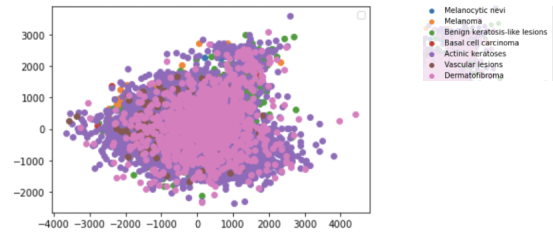
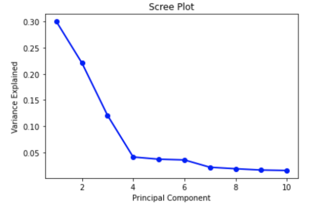
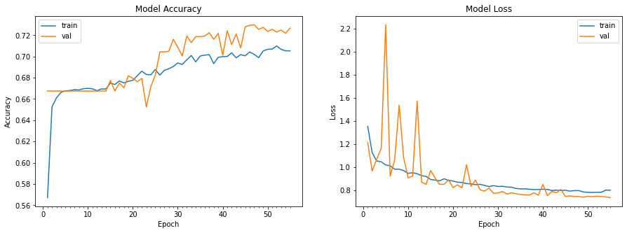
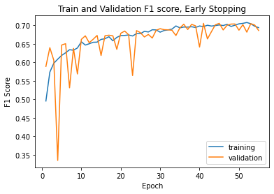
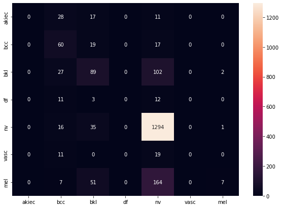
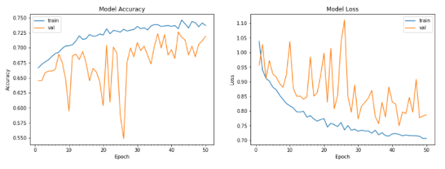
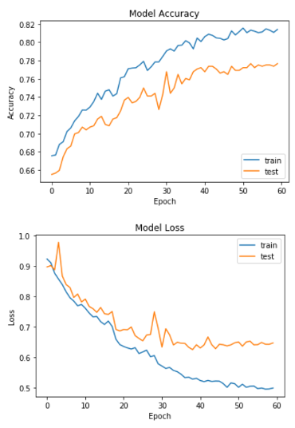
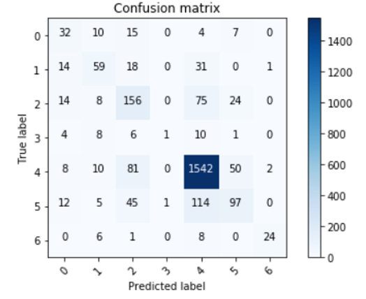
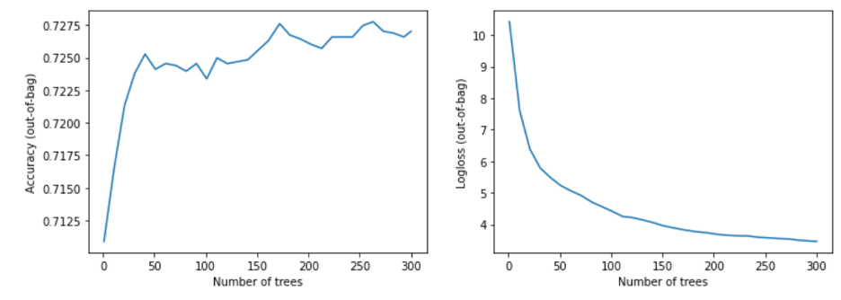
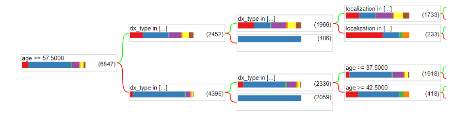

HAM10000
Final Report
Cancer is an ongoing health issue in our society without a significantly effective cure. It is well known that early detection of cancer may provide the patient with the best chance of beating it. Given that there are different types of cancers, each with their own symptoms, it can be difficult to detect some over others. Skin cancer is one that can be visually recognized. There are multiple different causes of skin cancer with different appearances (Actinic keratoses, basal cell carcinoma, melanoma, etc.).
In order to accurately diagnose a patient, we must take into account numerous causes of skin cancer; however, this can prove difficult as some causes can look similar at times. It may be beneficial to utilize machine learning to classify different types of skin cancers. This can help aid doctors to more accurately diagnose skin cancer by either confirming their diagnosis or suggesting a re-diagnosis. Having a second opinion from a machine learning model can help eradicate many false positives and negatives. This can ensure that patients get the most effective treatment for their type of skin cancer.
We are using the HAM10000 dataset from Kaggle, a collection of about 10k images arranged in CSV files where each column is a sequential pixel. In this section, we will detail the various models we have trained on this dataset so far.
Preprocessing Before starting building the model, we decided to use principal component analysis (PCA) to preprocess the data due to its high dimension. We projected the points to a more manageable number of dimensions, which is ten, to de-noise the data. We used sklearn.decomposition to import PCA, which uses singular value decomposition (SVD) to project the data to a lower dimension. This will allow us to better observe and identify hidden trends and changes within the data. We intend to compare the change in accuracy between the raw data being trained on our various models (NN, CNN, Decision Tree), to the PCA-reduced data being used. Next, we created a scree plot to check whether the PCA worked well on the data or not. Based on the presence and location of an elbow in this plot, we were able to assess PCA’s performance.
Simple CNN We constructed a simple convolutional neural net initially by using Keras’ Sequential library to progressively add layers to the network. The initial pass of the design network involved understanding the various kinds of layers that typically are used in a CNN architecture, such as Convolution, Dropout and MaxPool. One thing that we did in our initial model to greatly speed up the computation time was use batch normalization, which standardizes the input from the previous layer into a normal distribution for the next layer. This enables further activations to compute a lot faster when they receive inputs. In this first pass, the following network architecture was used: [[Conv2d -> ReLU] * 2 -> MaxPooling -> BatchNorm -> Dropout] * 2 -> [Flatten -> Dense -> Dropout] * 2 -> Dense -> Out
While we did give this model a large number of epochs to train on (75), we also implemented common techniques like ReduceLR and and EarlyStopping based on F1 score to ensure the network does not over-train. During execution, we saw the learning rate drop to extremely low values, and the network never needed to use all epochs to maximize its score.
More Complicated CNN In addition to a simple neural network, we decided to explore a more advanced CNN with more layers. We used a Keras Sequential model, where each layer was added from input. We chose Conv2D, which transforms a part of an image using a kernel filter based on the given kernel size. The MaxPool2D layer acts as a downsampling filter, where it just picks maximum values within neighbors in order to minimize computational burden. Then, a dropout layer was added where some nodes are ignored (with weight of 0), making the learning process more efficient. Multiple of these were implemented in order to get a big picture of the dataset and extract several features. ReLu was used to add nonlinearity to the dataset. A flatten layer was used to make everything into 1D.
The full architecture was as follows : In -> [[Conv2D->relu]*2 -> MaxPool2D -> Dropout]*2 -> Flatten -> Dense -> Dropout -> Out. This particular architecture was used since it was commonly used for datasets that contained skin samples, so we used this as a starting point. The weight for melanoma was higher than others, with a weight of 3, since we want the model to be more sensitive towards cancer. We added an optimizer with a learning rate of 0.001 with 50 epochs with a batch size of 10. We chose these values as a starting point since we wanted to tune the model later on.
Upon reviewing the accuracy of our improved CNN, we decided to add more layers and tune the hyperparameters. We trained several models but are only focusing our best ones here. Some of the areas we fine-tuned are the number and type of layers that would go into our sequential model, the learning rate, number of epochs amongst others. In our most effective fine-tuning, we added another set of Conv2D, and Dense layer, and the final architecture of the model was : In -> [[Conv2D->relu]*2 -> MaxPool2D -> Dropout]*3 -> Flatten -> Dense*2 -> Dropout -> Out
In an attempt to increase accuracy, we decreased the learning rate since we hypothesized that a high learning rate might have led the optimizer to fall into a local minimum. We set the learning rate to 0.00075 since a smaller learning rate would increase the chances of reaching the global minimum of the loss function more efficiently. We also chose to reduce the learning rate by half if the accuracy did not improve after 3 epochs. We also increased the number of epochs to 60 with a batch size of 16 for training.
State of the Art Model Attempts During the last part of our project, we also tried to train HAM10000 using a few state of the art models. We started this work by choosing VGG16 and resizing the images to 224x224 pixels and adding a Dense, Dropout, and a final Dense layer for our predictions.
We then compared VGG to other models and tried to select other models to experiment with. We used the following graphic from Eugenio Culurciello's blog post to look at other models. For each mode we ended up testing (VGG, MobilenetV2, and ResNet-50), we used the weights from Imagenet dataset since they are generally accepted as a baseline for most classification tasks. We used a Dropout of 0.2 before the final predictions of 7 classes to reduce some of the weights used and reduce the chance of overfitting. We kept the other hyperparameters the same since we wanted to use the performance of the baseline for each of these models as a basis of comparison to our models

Random Forest We decided to also look into using a random forest approach to classify the different types of skin cancer. In order to do this, we utilized the tfdf library from tensorflow_decision_forests. Additionally, we used Pandas to represent and manipulate the dataset. The program reads in the .csv representation of the dataset provided on Kaggle which includes the lesion_id, image_id, dx, dx_type, age, sex, and localization. The image_id is the name of the corresponding image (which is provided in the dataset). Dx_type, age, sex, and localization are all attributes along which splits occur in the random forest. Dx is the label corresponding to the type of skin cancer present in the image. We use a 70/30 % train/validation split. Next, we convert the labels to integers. Finally, we train the model and check the accuracy and loss graphs.
Since our dataset has 7 different types of skin cancer images, the goal of the model will be to display results as numbers 0-6, corresponding to the type of cancer the image is diagnosed as. We expect to analyze the results using methods such as accuracy and recall to test how closely our model was able to predict the type of cancer. Since there are features such as location of lesions and age included in the dataset, we hope to find out the features that impact the results the most, which would provide healthcare workers with a list of traits that make someone more susceptible to developing skin cancer. This would ideally help them warn those who are at more risk for a particular type of skin cancer based on their medical history or other factors.
Preprocessing: The dataset was fit and transformed to create a 2D scatter plot of the features, which is shown below:
The different diagnoses are present as layers with the two features left after reducing on the x and y axes of the plot. As presented in the data, Actinic keratoses (dark purple) seem to have less correlation between the two features.
The Scree plot shown above depicts an elbow at Principal Component 4. This means that the first four Principal Components captured the most information, and the rest can be disregarded without any major loss. However, after research regarding an ideal number of Principal Components, we found that a number greater than three can imply that PCA may not be the ideal way to visualize the data. For future preprocessing, we may want to consider other techniques to reduce dimension depending on the impact of having 4 Principal Components.
Initial CNN: Our initial CNN used a 80/20 train-test split, and then within the training data we used another 80-20 split to extract a validation dataset. As below, we see a lot of variability in the validation dataset compared to the training set. This is likely due to the model's simplicity, which causes a tradeoff with the stability from new images. Another factor to this would likely be using BatchNormalization incorrectly, causing the normalization to happen at the wrong time. We hope to do more research on this in the next phase of the project since it is a powerful tool to speed up processing.
Even with varying accuracy and loss, when we plot the model's F1 score on the training and validation set, we do see stabilization as the epochs keep going.
Finally, we can evaluate the model performance on the test data. The confusion matrix shows two things that we would want to improve on. First, we see no data in the akiec, vasc, and df categories, and this happened over more than one training run of the network. This could mean a bad split of test data, but is unlikely because we would have seen improvement over different runs. Thus, finding the cause of this will be paramount in the next phase of the project. The second thing we need to improve is the variability in known classifications, as seen in bcc and nv. Since we use a simple network architecture, there are likely multiple aspects of the model we can iterate on to solve both of these issues in the future.
Improved CNN: The model was evaluated using a testing and validation dataset. Loss and accuracy were used as metrics, as well as a confusion matrix. The model’s training and test accuracy and loss are shown below:
The accuracy for the test data was around 71.4%. While these results are satisfactory, we aimed to gain better results with hyperparameter tuning, and the results can be seen below:
As seen in the figure above, the accuracy was not only higher, but the training trajectory was a lot more predictable. This model produced an accuracy of 76.3%, which was the highest accuracy out of our CNN models. We decided to also measure how well the model was classifying melanomas, since those are the most important.
The confusion matrix for the test dataset is as follows:
As we can see, the model does a really good job at detecting melanomas, which satisfied our goals
Using State of the Art Models: As mentioned earlier, we used VGG16 and extra dense/drop layers to make our final predictions. We also tested on ResNet-50 and MobileNet, but we ran into memory issues on the Colab GPUs when we tested HAM10000 on any of these networks. Even MobileNet, with only about 3M parameters, tended to exceed the memory during training due to the fact that we trained on 100000 images plus a generator. We attempted to alleviate the memory load by using the del capability from python, but by the time we got to the training step the memory pressure still caused our models to time out
In the future, if we have access to more reliable hardware that has considerably more memory, it's likely that we'd see high-accuracy results from these network architectures. However, we were limited by time and resources and couldn't pursue this front much further
Random Forest: Below are the graphs that show the accuracy and loss of the random forest on the validation data.
The accuracy graph looks pretty good and reasonable as it increases with the number of trees and seems to reach a convergence with an accuracy of around 72%. Additionally, the loss graph looks reasonable as it decreases with the number of trees. However, there are definitely measures we can take to increase the accuracy of the random forest. Below shows the architecture of the first tree of our random forest at a maximum depth of 3.
One thing to notice is that the data is not splitting by the image_id. This is most likely because the actual image was not yet used in the dataset. The only real attributes that were utilized were dx_type, age, sex, and localization. We still need to gather the pixels of each image and utilize them in a meaningful way as attributes in the random forest model. This is one way we could achieve more accurate predictions.